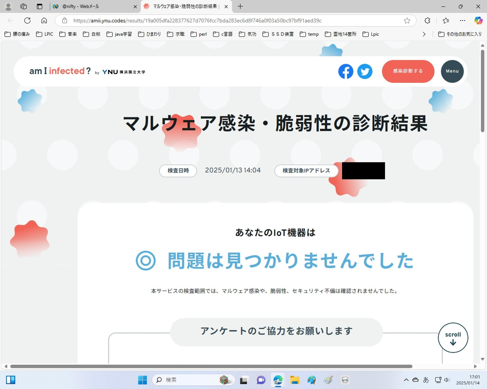

うるがいの話 ある日
最新: ルータのセキュリティ【うるがいの話 ある日】とは 一日だけのプログです
『うるがいの話』の最新一日だけのプログで、通信料が少なく経済的だ。カニの画像をクリックすると全ての日付が載る『うるがいの話』サイトを表示します
|
|
【うるがいの話】 うるがい(ｳﾙｶﾞｲ urugai)とは、『もずくがに』の名前でとても大きくなります。 |
|---|---|
|
|
【カミマヤーの話】 猫のことを方言でマヤーといいます。カミマヤー（kamimayaa）とは、神の猫のことです。 |
|
【たながぁの音楽】 たながぁ（ﾀﾅｶﾞｰ tanagaa）とは手長えびのことで、何種類かあり大きいのは車 エビぐらいになります。 |

|
【ぶながぁの話】 ぶながぁ(ﾌﾞﾅｶﾞｰ bunagaa)とは、赤い髪の毛、赤い身体、そして身長は１ｍ２０ｃｍ ぐらい、川の蟹を食べているの目撃された。場所は沖縄県国頭郡大宜味村のと ある村僕の隣近所に住んでいる爺さんから、聞いた話です。 |
|
|
【ギーマの話】 ギーマ(giima)とは、山原の里山に咲くスズランに似た、 花を付けます。実は食べられます、 気が付くと口の周りが紫になっています。 |
2025年01月15日 (水）ルータのセキュリティ
16:25
毎日みているプログにあるリンク先が、やられている。私の『ぶな
がぁの話』が同じfc2なのだが。
■人気ブログランキング
■（ＦＣ２ブログランキングは、海外サーバーからのアクセスが正
月から不能のために休止します）
今日から、ＦＣ２のリンク先の表示が無くなっている。
１月２日は、このプログが見れなかった。下は、１月３日のプログ
である
昨日はブログが非表示の状態が12時間以上も続きました。
皆様に御心配をお掛けしました。
＊「NTTドコモ、サイトで一時障害 サイバー攻撃が原因」
1/2(木) 15:25配信
NTTドコモからの発表では、1月2日にポータルサイト「goo」など
一部のサービスでシステム障害が発生し、その原因は大量のデータ
を送り付けてサーバーに負荷をかける「DDoS（ディードス）攻撃」
だったそうです。
この年末から新年に掛けて、最初は空港のシステムの停止から始ま
り、その次が一部の都市銀行のATMもドス攻撃を受けて停止してい
ました。そして昨日はNTTへのドス攻撃です。
ヨメが、深夜のルーターの明かりが激しく点滅していると気にして
いたので、以前に利用した
に診断を依頼した、結果は大丈夫とのこと。ホッとするが、深夜の
忙しい点滅はなんだろう・・・・。
